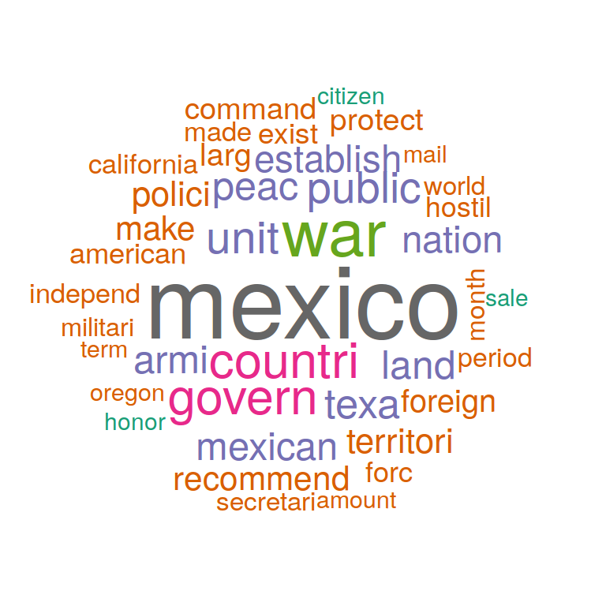
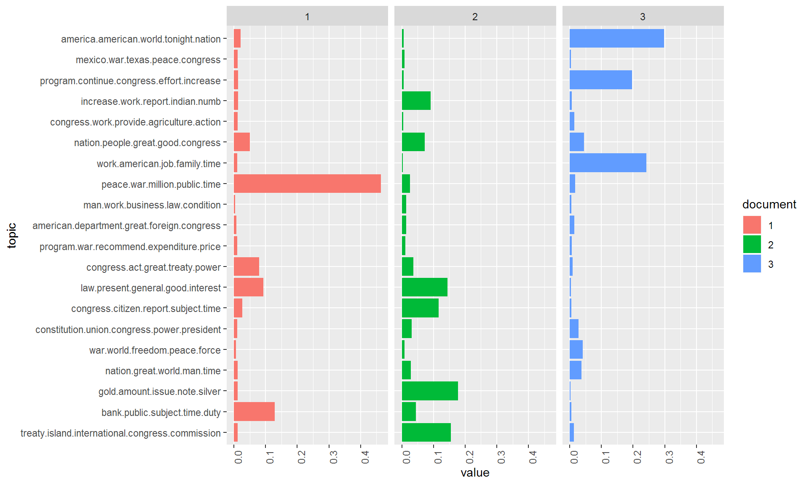
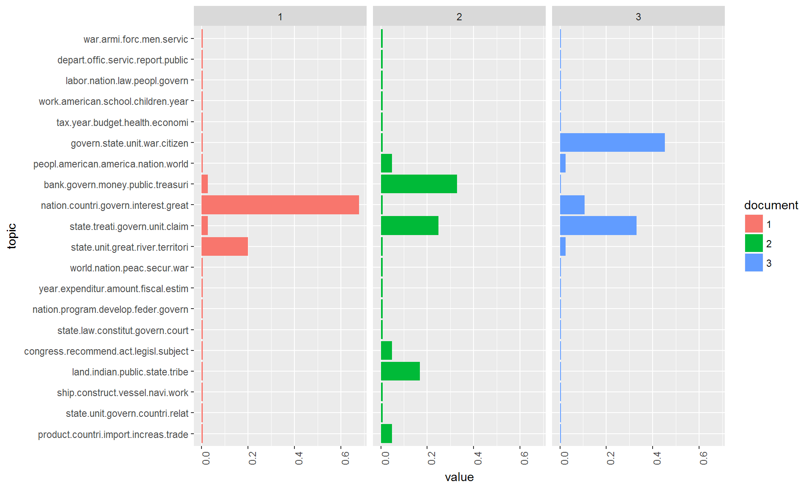
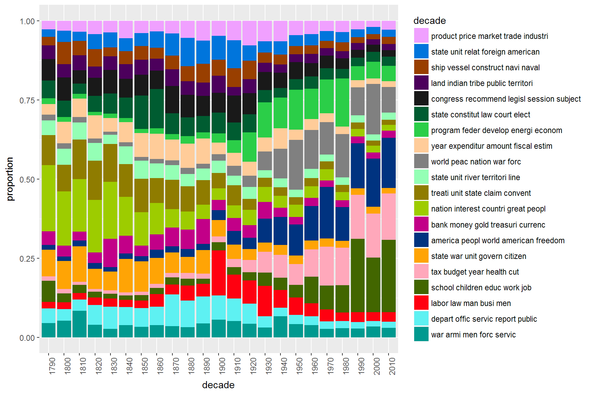

This exercise demonstrates the use of topic models on a text corpus for the extraction of latent semantic contexts in the documents. In this exercise we will:
The process starts as usual with the reading of the corpus data. Change to your working directory, create a new R script, load the tm-package and define a few already known default variables.
# setwd("Your work directory")
options(stringsAsFactors = FALSE)
library(tm)
require(topicmodels)The 231 SOTU addresses are rather long documents. Documents lengths clearly affects the results of topic modeling. For very short texts (e.g. Twitter posts) or very long texts (e.g. books), it can make sense to concatenate/split single documents to receive longer/shorter textual units for modeling.
For the SOTU speeches for instance, we infer the model based on paragraphs instead of entire speeches. By manual inspection / qualitative inspection of the results you can check if this procedure yields better (interpretable) topics. In sotu_paragraphs.csv, we provide a paragraph separated version of the speeches.
For text preprocessing, we remove stopwords, since they tend to occur as “noise” in the estimated topics of the LDA model.
textdata <- read.csv("data/sotu_paragraphs.csv", sep = ";", encoding = "UTF-8")
english_stopwords <- readLines("resources/stopwords_en.txt", encoding = "UTF-8")
# Create corpus object
corpus <- Corpus(DataframeSource(textdata))
# Preprocessing chain
processedCorpus <- tm_map(corpus, content_transformer(tolower))
processedCorpus <- tm_map(processedCorpus, removeWords, english_stopwords)
processedCorpus <- tm_map(processedCorpus, removePunctuation, preserve_intra_word_dashes = TRUE)
processedCorpus <- tm_map(processedCorpus, removeNumbers)
processedCorpus <- tm_map(processedCorpus, stemDocument, language = "en")
processedCorpus <- tm_map(processedCorpus, stripWhitespace)After the preprocessing, we have two corpus objects: processedCorpus, on which we calculate an LDA topic model [1]. To this end, stopwords were removed, words were stemmed and converted to lowercase letters and special characters were removed. The second Corpus object corpus serves to be able to view the original texts and thus to facilitate a qualitative control of the topic model results.
We now calculate a topic model on the processedCorpus. For this purpose, a DTM of the corpus is created. In this case, we only want to consider terms that occur with a certain minimum frequency in the body. This is primarily used to speed up the model calculation.
# compute document term matrix with terms >= minimumFrequency
minimumFrequency <- 5
DTM <- DocumentTermMatrix(processedCorpus, control = list(bounds = list(global = c(minimumFrequency, Inf))))
# have a look at the number of documents and terms in the matrix
dim(DTM)## [1] 21334 6042# due to vocabulary pruning, we have empty rows in our DTM
# LDA does not like this. So we remove those docs from the
# DTM and the metadata
sel_idx <- slam::row_sums(DTM) > 0
DTM <- DTM[sel_idx, ]
textdata <- textdata[sel_idx, ]As an unsupervised machine learning method, topic models are suitable for the exploration of data. The calculation of topic models aims to determine the proportionate composition of a fixed number of topics in the documents of a collection. It is useful to experiment with different parameters in order to find the most suitable parameters for your own analysis needs.
For parameterized models such as Latent Dirichlet Allocation (LDA), the number of topics K is the most important parameter to define in advance. How an optimal K should be selected depends on various factors. If K is too small, the collection is divided into a few very general semantic contexts. If K is too large, the collection is divided into too many topics of which some may overlap and others are hardly interpretable.
For our first analysis we choose a thematic “resolution” of K = 20 topics. In contrast to a resolution of 100 or more, this number of topics can be evaluated qualitatively very easy.
# load package topicmodels
require(topicmodels)
# number of topics
K <- 20
# set random number generator seed
set.seed(9161)
# compute the LDA model, inference via 1000 iterations of Gibbs sampling
topicModel <- LDA(DTM, K, method="Gibbs", control=list(iter = 500, verbose = 25))Depending on the size of the vocabulary, the collection size and the number K, the inference of topic models can take a very long time. This calculation may take several minutes. If it takes too long, reduce the vocabulary in the DTM by increasing the minimum frequency in the previous step.
The topic model inference results in two (approximate) posterior probability distributions: a distribution theta over K topics within each document and a distribution beta over V terms within each topic, where V represents the length of the vocabulary of the collection (V = 6042). Let’s take a closer look at these results:
# have a look a some of the results (posterior distributions)
tmResult <- posterior(topicModel)
# format of the resulting object
attributes(tmResult)## $names
## [1] "terms" "topics"nTerms(DTM) # lengthOfVocab## [1] 6042# topics are probability distribtions over the entire vocabulary
beta <- tmResult$terms # get beta from results
dim(beta) # K distributions over nTerms(DTM) terms## [1] 20 6042rowSums(beta) # rows in beta sum to 1## 1 2 3 4 5 6 7 8 9 10 11 12 13 14 15 16 17 18 19 20
## 1 1 1 1 1 1 1 1 1 1 1 1 1 1 1 1 1 1 1 1nDocs(DTM) # size of collection## [1] 21268# for every document we have a probaility distribution of its contained topics
theta <- tmResult$topics
dim(theta) # nDocs(DTM) distributions over K topics## [1] 21268 20rowSums(theta)[1:10] # rows in theta sum to 1## 1 2 3 4 5 6 7 8 9 10
## 1 1 1 1 1 1 1 1 1 1Let’s take a look at the 10 most likely terms within the term probabilities beta of the inferred topics (only the first 8 are shown below).
terms(topicModel, 10)## Topic 1 Topic 2 Topic 3 Topic 4 Topic 5 Topic 6
## [1,] "congress" "relat" "measur" "land" "year" "state"
## [2,] "state" "countri" "object" "indian" "tax" "unit"
## [3,] "constitut" "govern" "interest" "public" "economi" "govern"
## [4,] "power" "foreign" "present" "territori" "job" "citizen"
## [5,] "presid" "american" "great" "limit" "budget" "mexico"
## [6,] "act" "interest" "exist" "protect" "cost" "power"
## [7,] "hous" "intern" "consider" "general" "rate" "right"
## [8,] "repres" "nation" "duti" "made" "save" "properti"
## [9,] "union" "power" "subject" "larg" "billion" "part"
## [10,] "author" "polici" "view" "popul" "busi" "author"
## Topic 7 Topic 8
## [1,] "work" "unit"
## [2,] "make" "treati"
## [3,] "time" "state"
## [4,] "give" "govern"
## [5,] "opportun" "claim"
## [6,] "educ" "negoti"
## [7,] "communiti" "convent"
## [8,] "respons" "minist"
## [9,] "school" "britain"
## [10,] "progress" "adjust"For the next steps, we want to give the topics more descriptive names than just numbers. Therefore, we simply concatenate the five most likely terms of each topic to a string that represents a pseudo-name for each topic.
top5termsPerTopic <- terms(topicModel, 5)
topicNames <- apply(top5termsPerTopic, 2, paste, collapse=" ")Although wordclouds may not be optimal for scientific purposes they can provide a quick visual overview of a set of terms. Let’s look at some topics as wordcloud.
In the following code, you can change the variable topicToViz with values between 1 and 20 to display other topics.
require(wordcloud)
# visualize topics as word cloud
topicToViz <- 11 # change for your own topic of interest
topicToViz <- grep('mexico', topicNames)[1] # Or select a topic by a term contained in its name
# select to 40 most probable terms from the topic by sorting the term-topic-probability vector in decreasing order
top40terms <- sort(tmResult$terms[topicToViz,], decreasing=TRUE)[1:40]
words <- names(top40terms)
# extract the probabilites of each of the 40 terms
probabilities <- sort(tmResult$terms[topicToViz,], decreasing=TRUE)[1:40]
# visualize the terms as wordcloud
mycolors <- brewer.pal(8, "Dark2")
wordcloud(words, probabilities, random.order = FALSE, color = mycolors)
Let us now look more closely at the distribution of topics within individual documents. To this end, we visualize the distribution in 3 sample documents.
Let us first take a look at the contents of three sample documents:
exampleIds <- c(2, 100, 200)
lapply(corpus[exampleIds], as.character)## [1] "2: I embrace with great satisfaction the opportunity which now presents itself\nof congratulating you on the present favorable prospects of our public\naffairs. The recent accession of the important state of North Carolina to\nthe Constitution of the United States (of which official information has\nbeen received), the rising credit and respectability of our country, the\ngeneral and increasing good will ..."## [1] "100: Provision is likewise requisite for the reimbursement of the loan which has\nbeen made of the Bank of the United States, pursuant to the eleventh\nsection of the act by which it is incorporated. In fulfilling the public\nstipulations in this particular it is expected a valuable saving will be\nmade...."## [1] "200: After many delays and disappointments arising out of the European war, the\nfinal arrangements for fulfilling the engagements made to the Dey and\nRegency of Algiers will in all present appearance be crowned with success,\nbut under great, though inevitable, disadvantages in the pecuniary\ntransactions occasioned by that war, which will render further provision\nnecessary. The actual liberation of all ..."After looking into the documents, we visualize the topic distributions within the documents.
# load libraries for visualization
library("reshape2")
library("ggplot2")
N <- length(exampleIds)
# get topic proportions form example documents
topicProportionExamples <- theta[exampleIds,]
colnames(topicProportionExamples) <- topicNames
vizDataFrame <- melt(cbind(data.frame(topicProportionExamples), document = factor(1:N)), variable.name = "topic", id.vars = "document")
ggplot(data = vizDataFrame, aes(topic, value, fill = document), ylab = "proportion") +
geom_bar(stat="identity") +
theme(axis.text.x = element_text(angle = 90, hjust = 1)) +
coord_flip() +
facet_wrap(~ document, ncol = N)
The figure above shows how topics within a document are distributed according to the model. In the current model all three documents show at least a small percentage of each topic. However, two to three topics dominate each document.
The topic distribution within a document can be controlled with the Alpha-parameter of the model. Higher alpha priors for topics result in an even distribution of topics within a document. Low alpha priors ensure that the inference process distributes the probability mass on a few topics for each document.
In the previous model calculation the alpha-prior was automatically estimated in order to fit to the data (highest overall probability of the model). However, this automatic estimate does not necessarily correspond to the results that one would like to have as an analyst. Depending on our analysis interest, we might be interested in a more peaky/more even distribution of topics in the model.
Now let us change the alpha prior to a lower value to see how this affects the topic distributions in the model.
# see alpha from previous model
attr(topicModel, "alpha") ## [1] 2.5topicModel2 <- LDA(DTM, K, method="Gibbs", control=list(iter = 500, verbose = 25, alpha = 0.2))
tmResult <- posterior(topicModel2)
theta <- tmResult$topics
beta <- tmResult$terms
topicNames <- apply(terms(topicModel2, 5), 2, paste, collapse = " ") # reset topicnamesNow visualize the topic distributions in the three documents again. What are the differences in the distribution structure?
# get topic proportions form example documents
topicProportionExamples <- theta[exampleIds,]
colnames(topicProportionExamples) <- topicNames
vizDataFrame <- melt(cbind(data.frame(topicProportionExamples), document = factor(1:N)), variable.name = "topic", id.vars = "document")
ggplot(data = vizDataFrame, aes(topic, value, fill = document), ylab = "proportion") +
geom_bar(stat="identity") +
theme(axis.text.x = element_text(angle = 90, hjust = 1)) +
coord_flip() +
facet_wrap(~ document, ncol = N)
First, we try to get a more meaningful order of top terms per topic by re-ranking them with a specific score [2]. The idea of re-ranking terms is similar to the idea of TF-IDF. The more a term appears in top levels w.r.t. its probability, the less meaningful it is to describe the topic. Hence, the scoring advanced favors terms to describe a topic.
# re-rank top topic terms for topic names
topicNames <- apply(lda::top.topic.words(beta, 5, by.score = T), 2, paste, collapse = " ")What are the defining topics within a collection? There are different approaches to find out which can be used to bring the topics into a certain order.
Approach 1: We sort topics according to their probability within the entire collection:
# What are the most probable topics in the entire collection?
topicProportions <- colSums(theta) / nDocs(DTM) # mean probablities over all paragraphs
names(topicProportions) <- topicNames # assign the topic names we created before
sort(topicProportions, decreasing = TRUE) # show summed proportions in decreased order## [1] "0.06775 : america peopl world american freedom"
## [2] "0.06286 : world peac nation war forc"
## [3] "0.06088 : nation interest countri great peopl"
## [4] "0.06009 : school children educ work job"
## [5] "0.05839 : program feder develop energi econom"
## [6] "0.05691 : tax budget year health cut"
## [7] "0.05488 : treati unit state claim convent"
## [8] "0.05418 : congress recommend legisl session subject"
## [9] "0.05049 : state constitut law court elect"
## [10] "0.04986 : depart offic servic report public"
## [11] "0.04814 : year expenditur amount fiscal estim"
## [12] "0.04795 : state unit relat foreign american"
## [13] "0.04776 : labor law man busi men"
## [14] "0.0476 : state war unit govern citizen"
## [15] "0.04618 : product price market trade industri"
## [16] "0.03996 : war armi men forc servic"
## [17] "0.03986 : bank money gold treasuri currenc"
## [18] "0.03756 : ship vessel construct navi naval"
## [19] "0.03458 : land indian tribe public territori"
## [20] "0.03411 : state unit river territori line"We recognize some topics that are way more likely to occur in the corpus than others. These describe rather general thematic coherences. Other topics correspond more to specific contents.
Approach 2: We count how often a topic appears as a primary topic within a paragraph This method is also called Rank-1.
countsOfPrimaryTopics <- rep(0, K)
names(countsOfPrimaryTopics) <- topicNames
for (i in 1:nDocs(DTM)) {
topicsPerDoc <- theta[i, ] # select topic distribution for document i
# get first element position from ordered list
primaryTopic <- order(topicsPerDoc, decreasing = TRUE)[1]
countsOfPrimaryTopics[primaryTopic] <- countsOfPrimaryTopics[primaryTopic] + 1
}
sort(countsOfPrimaryTopics, decreasing = TRUE)## [1] "1795 : world peac nation war forc"
## [2] "1712 : america peopl world american freedom"
## [3] "1490 : program feder develop energi econom"
## [4] "1487 : school children educ work job"
## [5] "1331 : tax budget year health cut"
## [6] "1304 : nation interest countri great peopl"
## [7] "1220 : treati unit state claim convent"
## [8] "1049 : congress recommend legisl session subject"
## [9] "1040 : state unit relat foreign american"
## [10] "1040 : state constitut law court elect"
## [11] "971 : product price market trade industri"
## [12] "959 : year expenditur amount fiscal estim"
## [13] "941 : depart offic servic report public"
## [14] "923 : state war unit govern citizen"
## [15] "800 : labor law man busi men"
## [16] "725 : bank money gold treasuri currenc"
## [17] "713 : ship vessel construct navi naval"
## [18] "677 : war armi men forc servic"
## [19] "598 : land indian tribe public territori"
## [20] "493 : state unit river territori line"We see that sorting topics by the Rank-1 method places topics with rather specific thematic coherences in upper ranks of the list.
This sorting of topics can be used for further analysis steps such as the semantic interpretation of topics found in the collection, the analysis of time series of the most important topics or the filtering of the original collection based on specific sub-topics.
The fact that a topic model conveys of topic probabilities for each document, resp. paragraph in our case, makes it possible to use it for thematic filtering of a collection. AS filter we select only those documents which exceed a certain threshold of their probability value for certain topics (for example, each document which contains topic X to more than 20 percent).
In the following, we will select documents based on their topic content and display the resulting document quantity over time.
topicToFilter <- 6 # you can set this manually ...
# ... or have it selected by a term in the topic name (e.g. 'iraq')
topicToFilter <- grep('iraq', topicNames)[1]
topicThreshold <- 0.2
selectedDocumentIndexes <- which(theta[, topicToFilter] >= topicThreshold)
filteredCorpus <- corpus[selectedDocumentIndexes]
# show length of filtered corpus
filteredCorpus## <<SimpleCorpus>>
## Metadata: corpus specific: 1, document level (indexed): 4
## Content: documents: 0Our filtered corpus contains 0 documents related to the topic NA to at least 20 %.
In a last step, we provide a distant view on the topics in the data over time. For this, we aggregate mean topic proportions per decade of all SOTU speeches. These aggregated topic proportions can then be visualized, e.g. as a bar plot.
# append decade information for aggregation
textdata$decade <- paste0(substr(textdata$date, 0, 3), "0")
# get mean topic proportions per decade
topic_proportion_per_decade <- aggregate(theta, by = list(decade = textdata$decade), mean)
# set topic names to aggregated columns
colnames(topic_proportion_per_decade)[2:(K+1)] <- topicNames
# reshape data frame
vizDataFrame <- melt(topic_proportion_per_decade, id.vars = "decade")
# plot topic proportions per deacde as bar plot
require(pals)
ggplot(vizDataFrame, aes(x=decade, y=value, fill=variable)) +
geom_bar(stat = "identity") + ylab("proportion") +
scale_fill_manual(values = paste0(alphabet(20), "FF"), name = "decade") +
theme(axis.text.x = element_text(angle = 90, hjust = 1))
The visualization shows that topics around the relation between the federal government and the states as well as inner conflicts clearly dominate the first decades. Security issues and the economy are the most important topics of recent SOTU addresses.
strsplit(textdata$text, "\n\n")) and compute a topic model on paragraphs instead of full speeches. How does the smaller context unit affect the result?1. Blei, D., Ng, A., Jordan, M.: Latent dirichlet allocation. The Journal of Machine Learning Research. 3, 993–1022 (2003).
2. Chang, J.: Lda: Collapsed gibbs sampling methods for topic models. (2012).
2017, Andreas Niekler and Gregor Wiedemann. GPLv3. tm4ss.github.io